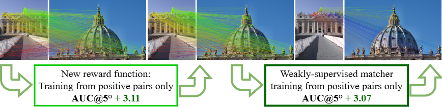
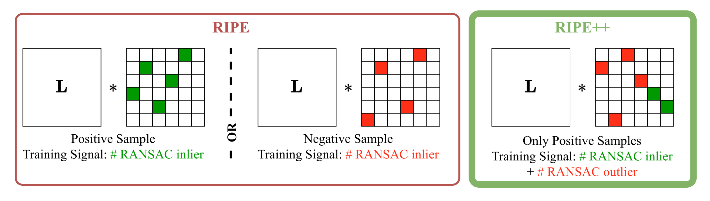
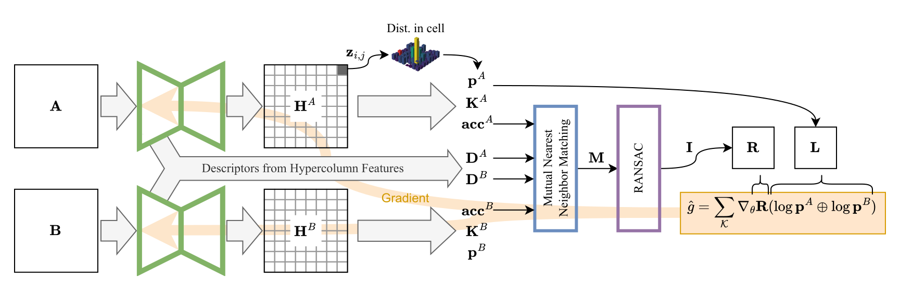
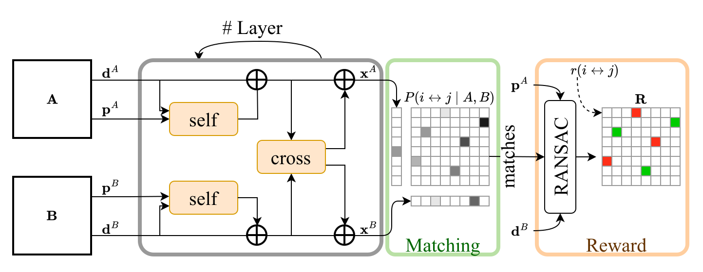

Reinforced Keypoint Learning from Positive Pairs Only

RIPE++ shows that keypoint detection, description and matching can be learned from positive image pairs only — no depth, no camera pose, and no negative pairs.
Sparse keypoint extraction and matching underpin core tasks in geometric computer vision, including structure-from-motion, visual SLAM, augmented reality, and medical image registration. Learning robust local feature representations, however, typically requires accurate camera poses or depth supervision, which are often unavailable in real-world settings. Reinforcement learning (RL) has recently emerged as a promising alternative, requiring only the information if two images show the same scene or not. However, existing RL formulations such as RIPE rely on coarse binary rewards and carefully constructed negative training pairs, limiting training stability and descriptor discriminability.
In this paper, we revisit RL-based keypoint learning and propose a reward that fully exploits the geometric consistency signal, deriving both reward and penalty from a single positive pair without contrasting against negatives. This richer signal provides sufficient supervisory contrast to learn discriminative detectors and descriptors from positive image pairs alone, enabling representation learning under extremely limited supervision. Furthermore, we show that the same RL objective can be extended to the matching stage by adapting LightGlue, raising AUC@5 on MegaDepth1500 from 56.58 to 59.65 and enabling weakly-supervised training of the full sparse matching pipeline from image pairs with partial visual overlap.
We validate our approach on established benchmarks, demonstrating competitive results compared to fully-supervised methods. We further show that the method can be even trained on low-texture medical video sequences, where camera poses are usually unavailable and standard SfM pipelines often fail.
A geometric reward that scores inliers and outliers, giving a richer and more stable training signal than RIPE's binary reward for RL-based keypoint learning.
This reward removes the need for negative training pairs, simplifying both the training pipeline and dataset curation.
It enables training from data as simple as raw video streams, as we demonstrate on medical image data where poses are unavailable.
We extend the same reward to a transformer-based matcher (LightGlue), improving AUC@5 on MegaDepth1500 from 56.58 to 59.65 — removing the last dependence on fully-supervised matching.
We validate on standard benchmarks (MegaDepth1500, HPatches, SCARED1500, Aachen Day-Night v2), performing favorably against fully-supervised training methods.
The heart of RIPE++ is where the geometric consistency signal is applied. Moving it from the image-pair level to the correspondence level is what makes negative pairs unnecessary and unlocks weakly-supervised matching.
RIPE assigned a single reward per image pair — counting geometrically consistent matches, and inverting the sign for hand-picked negative pairs.
RIPE++ instead defines the reward per correspondence within positive pairs only: RANSAC inliers are rewarded, outliers are explicitly penalized. This finer signal supplies its own contrast — so the network no longer needs negative examples to learn what not to match.

A network predicts a heatmap for each image; keypoints are sampled per cell as a categorical policy, and descriptors are read out as hypercolumn features from the encoder. Mutual-nearest-neighbor matches are filtered by a robust fundamental-matrix estimate to build the reward matrix.
Gradients follow from REINFORCE, weighting the log-probabilities of selected keypoints by their reward. A new entropy regularizer sharpens each cell's distribution toward a one-hot peak, improving localization — especially at low resolution.

Learned matchers such as LightGlue usually need ground-truth correspondences from pose or depth. RIPE++ reformulates matching as a policy-gradient problem (inspired by DISK): matches deemed geometrically consistent by RANSAC receive a reward, outliers a penalty.
This trains the full sparse-matching pipeline end-to-end from image pairs alone, lifting AUC@5 on MegaDepth1500 by +3.07 and removing the last piece of strong supervision.

Raw correspondences produced by RIPE++ across outdoor, matcher-refined, and medical settings.
@article{kuenzel2026ripepp,
title = {RIPE++: Reinforced Keypoint Learning from Positive Pairs Only},
author = {K\"unzel, Johannes and Eisert, Peter and Hilsmann, Anna},
journal = {arXiv preprint},
year = {2026}
}The arXiv identifier and final citation will be added once the preprint is public.